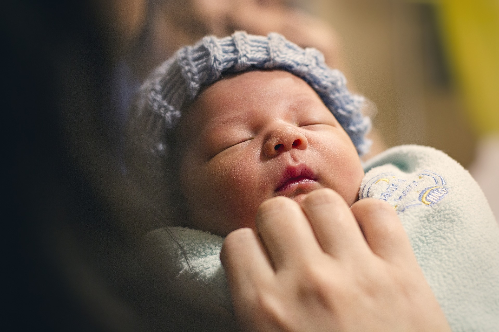

When I was pitching this story and mentioning there’s no maternity leave in the United States, my classmate, from a country other than America, burst out a “What?!”. And unfortunately, my clarification that “no PAID maternity leave, but you can get minimum 12 unpaid weeks” was followed by a big eye-rolling. Yes, you felt the disappointment from a foreigner, not to say the parents in this country.
If you've been paying attention to the political news in the past couple of years, mandating paid family leave has been one of the top talking over years. People clearly know the benefits of paid maternity leave, which are backed up by studies of authority: a bigger likelihood of breastfeeding, fewer symptoms of depression, and better recovery and bonding with babies for new mothers.
Source: Pixabay
However, these long-term and hard-to-be-quantified benefits are dwarfed in front of American’s love of individualism and more importantly, the opposing power from the business side. Before the paid family leave program approved in this June, the Washington State already passed the Washington Family and Medical Leave Insurance Act as early as in 2007, which was never implemented due to the lack of a funding plan.
Several mediums have used the parental leave data from OECD and experimented with different graphs to demonstrate America’s slightly embarrassing stance on this topic – the only OECD country that has no paid parental leave.
Source: OECD Family database
Though these graphs are still valid for the status quo, the situation is overall improving. Americans are generally supportive of paid family leave. A survey conducted by the Pew Research Center, a non-partisan American think tank, shows that 82% of the interviewees hold the opinion that mothers should receive paid leave following birth or adoption of their child. 61% say this benefit should be paid by employers, followed by 12% by the federal government and 9% by the state government. Except for Washington as mentioned above, New York and the District of Columbia will also join California, New Jersey, and Rhode Island, the three states that currently offer paid family and medical leave, on Jan. 1, 2018 and in 2020.
On the company level, companies, especially those in the finance and technology industries, are facing a talent war to attract millennial workers, who are becoming the backbone of enterprises and have higher expectations for gender equality. According to a crowdsourced maternity leave database, which collected policies regarding paid maternity leave of 1,534 companies and paid fraternity leave of 497 companies, more than 85% of the companies are offering paid maternity leave and 21% for paid fraternity leave. Netflix, Bill and Melinda Gates Foundation, and Applebee's International, Inc. are among the most generous companies, leading the list by offering maternity leave as long as 52 weeks. Additionally, Netflix and Bill and Melinda Gates Foundation also have 52 weeks available for the new dads. Putting some concerns aside, such as that about whether taking these benefits would hurt employers’ careers, at least these companies are providing their employees with an option and financial support.
Source: Fairygodboss
However, if one had a closer look at the corporate policies, he would find that more than half of the maternity leaves are shorter than six weeks. The employees of only 91 companies have access to longer than 17.7 weeks paid maternity leave, the average of the OECD countries. Undoubtedly, the approximately 1,300 companies, even including those offering one week paid leave, are only a small portion of all the businesses in America. Very few workers enjoy the access to paid family leave, and access varies considerably by industry. The result of the National Compensation Survey, conducted annually by the federal Bureau of Labor Statistics, shows that in 2016, 38% of the finance and insurance employees had access to paid family leave, versus a merely 5% of those in the construction industry. The definition of paid family leave here includes paid maternity and paternity leave as well as the paid leave to care for a sick child or a sick adult relative, leaving out any sick leave, vacation, personal leave, or short-term disability leave that is available to the employee.
Source: National Compensation Survey: Employee Benefits in the United States, March 2017